Merhabalar arkadaşlar bugün Veritabanı deyince dünya devlerinde biri olan Oracle ın “Oracle Database Express Edition (XE) Release 18.4.0.0.0 (18c)″ sürümünü kuracağız.
Bu sürümü kullanıcılar ücretsiz olarak kullanabilirle. Diğer ücretli sürümler için lisans alıp kullanmak gerekiyor ama bu ücretsiz sürümü bizim çoğu işimizi görecektir.
Gelin şimdi kurulumu yapmaya başlayalım:
1-Öncelikle oracle’a https://profile.oracle.com/myprofile/account/create-account.jspx bu adresten üye olmanız gerekiyor.
2-Şimdi oracle’ın sitesinden kurulum yapıcağımız sürümü indireceğiz.
Aşağıda verilen linke tıklayarak veya kopyalayıp tarayıcınızda açabilirsiniz.
İşletim sisteminize uygun olan sürümü seçtikten sonra Oracle License Agreement kısmını işaretleyip Download butona tıklayın ve indirin.
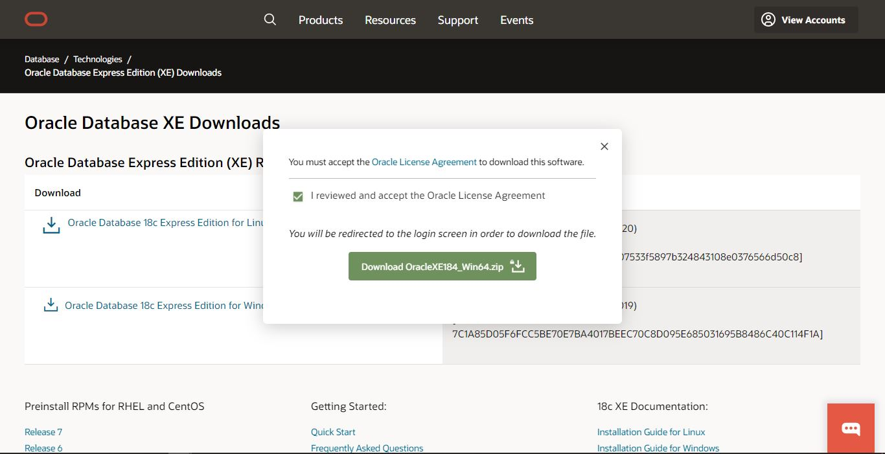
3-İndirdiğimiz dosyayı açıp winrar'dan çıkarıyoruz ve setup yazan exe dosyasını çift tıklayarak çalıştırıyoruz ve kuruluma başlıyoruz.
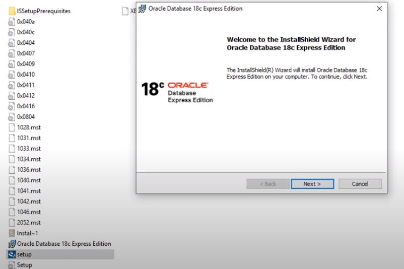
Next'e tıklıyoruz.
4- I accept kısmını seçip kullanım koşullarını kabul ederek Next diyoruz.
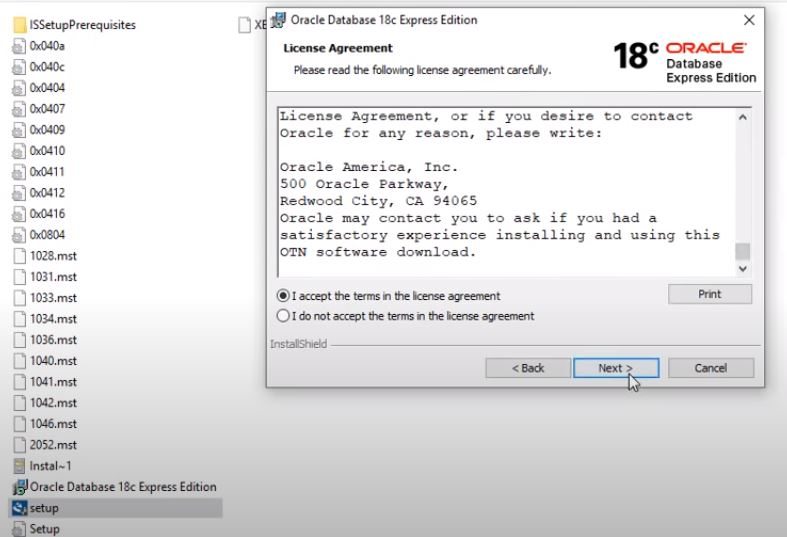
5-Karşımıza çıkan pencerede dosyaların nereye kurulacağını soruyor, eğer farklı biryere kurmak isterseniz Change düğmesinden dosya yolunu değiştirebilirsiniz.
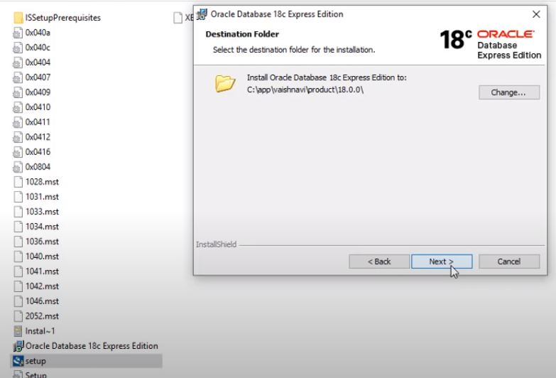
6-Burada Veritabanımızın SYSTEM ve SYS kullanıcılarının şifresini belirlememizi istiyor.Şifremizi belirledikten sonra Next diyoruz. Şifrenizin alfanümerik olmasına dikkat edin
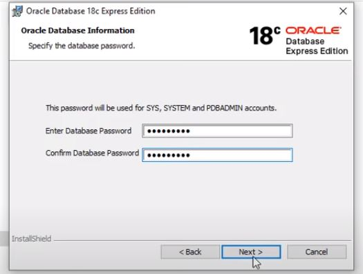
7-Kuruluma başlaması için Install diyoruz.
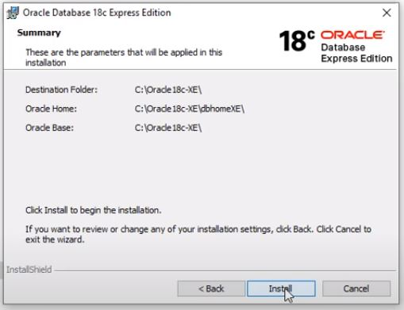
8- Kurulumumuz bitti Finish butona tiklayin. Şimdi oracle veritabanı'nı nasıl kullanacağımızın anlatmaya başlayayım.
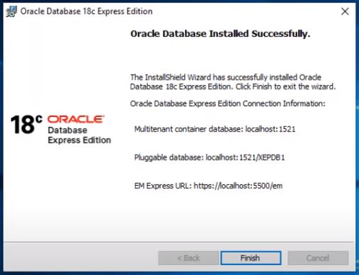
9-Başlat menüsünden Sql plus diye aratıyoruz ve çalıştırıyoruz.
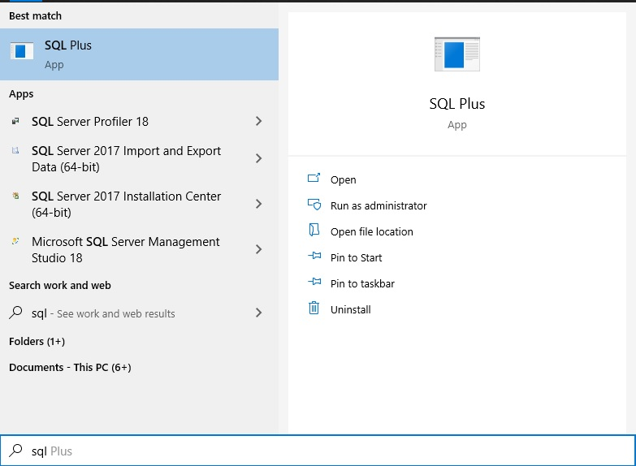
10- Burayı Dikkatlice okuyun :Karşımıza gelen ekranda user-name SYS AS SYSDBA giriyoruz, hatırlıyorsanız kurulum yaparken şifre belirlemiştik. password ekranında şifreyi giriniz ama şifreyi girdiğinizde ekranda sanki şifre girmiyomuş gibi imleç hiç hareket etmiyecektir yani ekranda herhangi birşey yazmaycak nokta veya yıldız olmaycak siz sadece şifreyi girin ve Enter a basın.Artık Oracle Database 'imize bağlandık. Gördüğünüz gibi ekranda Connected to: yazan kısımda nereye bağlandımız yazıyor.
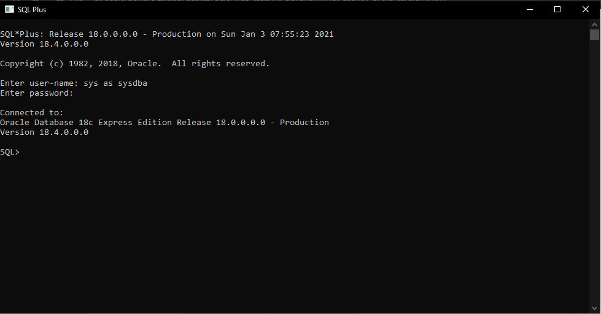
Şimdi Oracle Database imiz daha görsel bir platformda kullanabilmek için sqldeveloper tool unu indirip kullanmayı göstereceğim:
1- Öncelikle SQL DEVELOPER'ı indirmek için Oracle'ın sitesinden programı indiriyoruz:
Aşağıda verilen linke tıklayarak veya kopyalayıp tarayıcınızda açabilirsiniz.
link : http://www.oracle.com/technetwork/developer-tools/sql-developer/downloads/index.html
İşletim sisteminize uygun olan sürümü seçtikten sonra Oracle License Agreement kısmını işaretleyip Download butona tıklayın ve indirin.
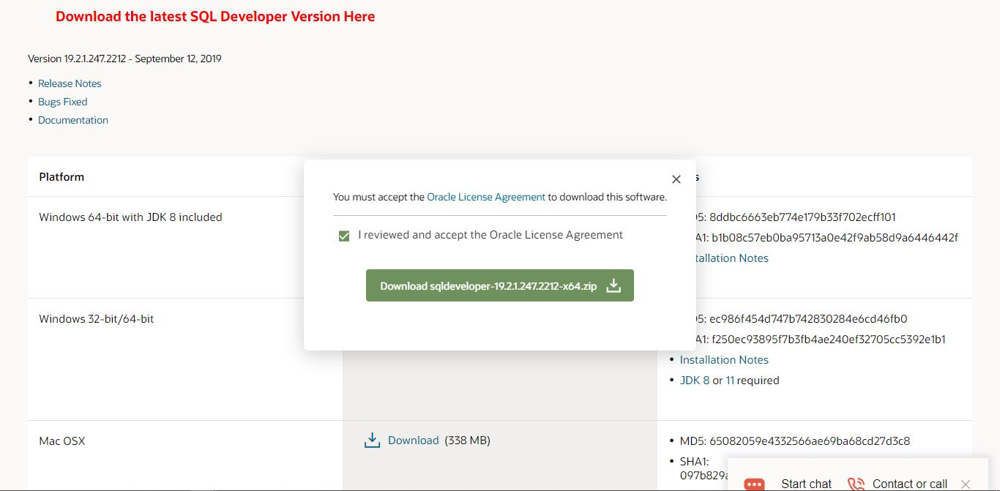
2-İndirdiğimiz winrar dosyasını açıp içindeki klasörü çıkartıyoruz herhangi bir kuruluma ihtiyaç duymuyor klasörün içindeki sqldeveloper.exe dosyasını çalıştırıyoruz.
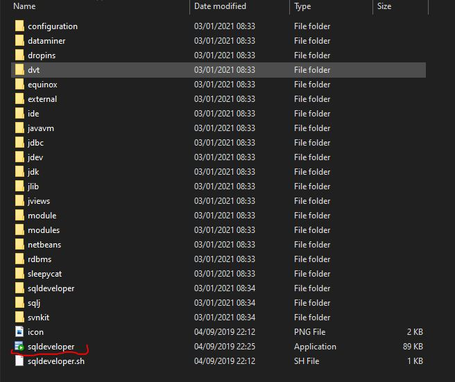
Sql Developer programımız çalışıyor veritabanına bağlanmak için sol üst kısımdaki “+” işaretine tıklıyoruz ve yeni bağlantımızı oluşturuyoruz.
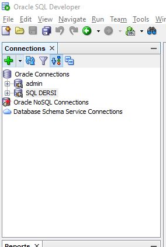
Karşımıza çıkan ekranda en üstte Name : kısmına bağlantınızın ismini //testbaglanti yazıyorum ben
Username : homeuser //yazıyoruz homeuser kullanıcısının kullandığı tablolara ulaşacağız
Password : ******** //şifre olarak daha önceden belirlediğimiz şifreyi yazıyoruz.
Ve Connect butona tıklayarak veritabanımıza bağlanıyoruz.
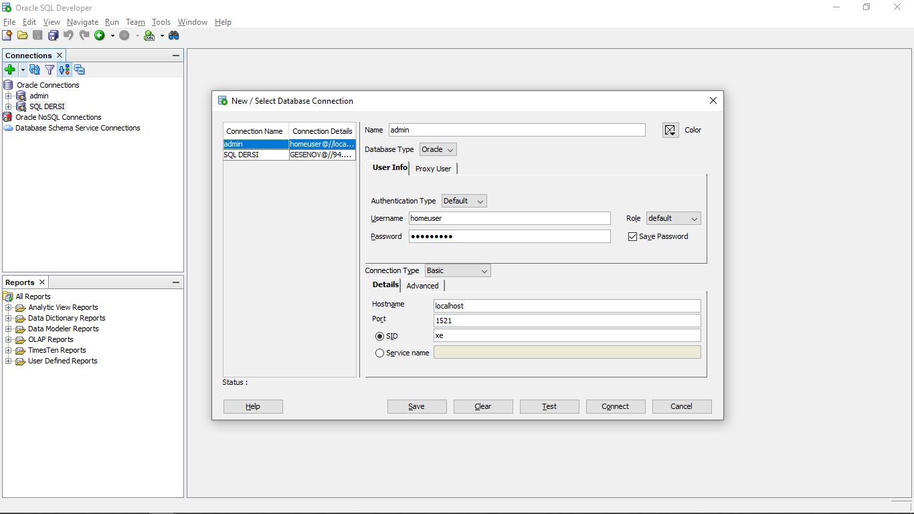
Veritabanımıza bağlandıktan sonra sol kısımdan veri tablolarını görüntüleyebilir seçtiğimiz tabloların üst kısımdaki sekmelerden column,data gibi kısımlardan verilerimizi görüntüleyebiliriz ve oracle veritabanımız üzerinde işlemler yapabilir yeni kayıtlar yeni tablolar ve sorgular oluşturabiliriz.
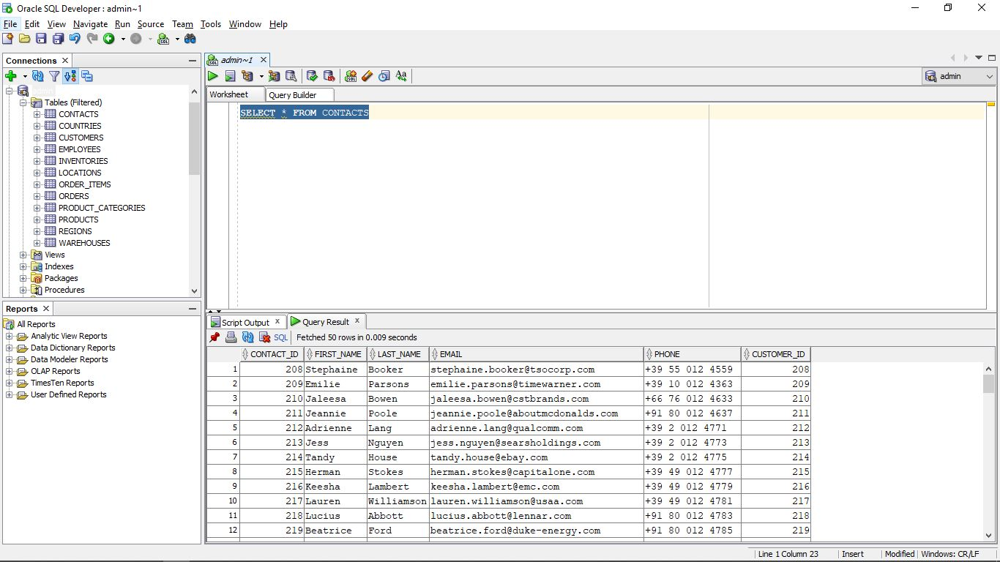